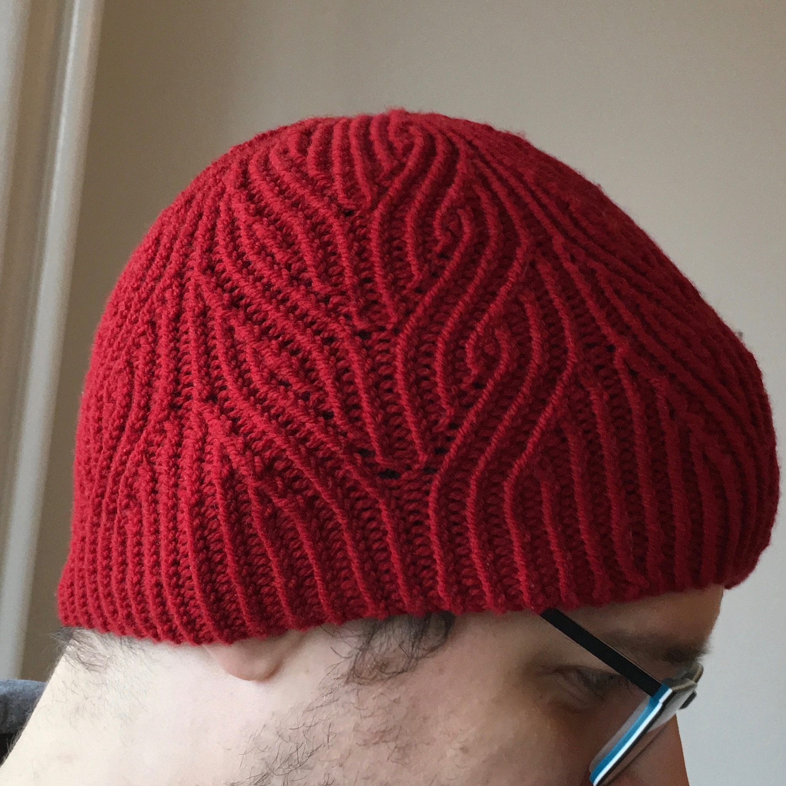
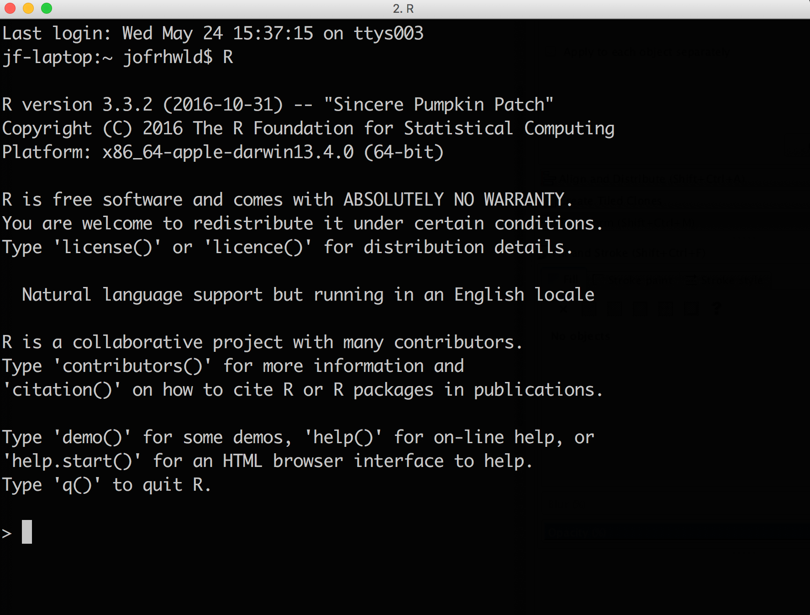
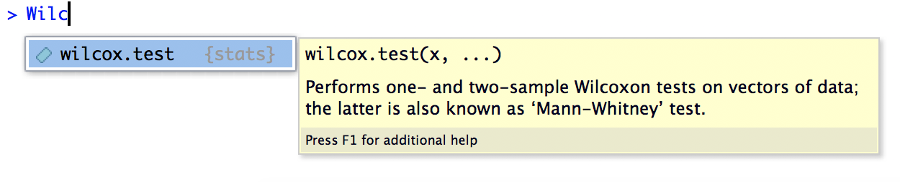
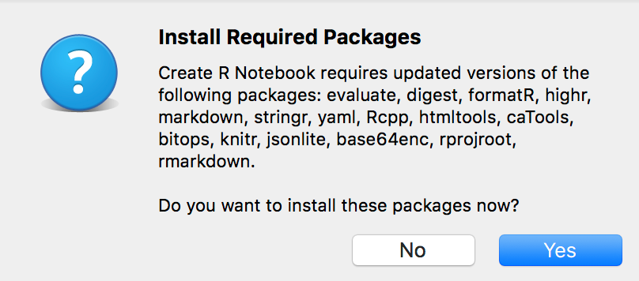
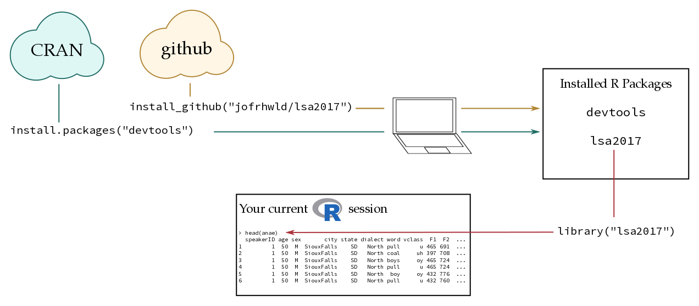

r
foo <- ggplot()Error in ggplot(): could not find function "ggplot"Josef Fruehwald
July 2017
December 2023
Welcome to Statistical Modelling with R. If there is one thing to remember from this course, it is that your analysis workflow should look something like this:
These are some of the core areas I figure are necessary to getting good at statistical modelling in R:
These are all skills you can achieve through practice, experience, and occasional guidance from someone more skilled than you. It is exactly like acquiring any other skill or craft. At first it will be confusing, you’ll make some mistakes, and it won’t look so good. I think

The way I improved my knitting is exactly the same as how you can improve your R programming ability:
Most of the content of the course is devoted to core R programming (things you should be memorizing or remembering where to find help), but I’ll try my best to annotate portions of the notes which correspond to workspace hygiene, being idiomatic, etc, so that you can distinguish between them.
The course will follow the workflow outlined at the beginning: begin → summarize → visualize → analyze.
| Week | Monday | Thursday |
|---|---|---|
| 1 | – | Intro - Basics & R Notebooks |
| 2 | Data Frames & Factors | Split-Apply-Combine, Reshaping |
| 3 | ggplot2 | Fitting Linear Models |
| 4 | map functions & fitting many models | Mixed Effects Linear models |
| 5 | Bootstraps & Visualization | – |
If you have a directory planning structure that you’re happy with, go ahead and do that. But if how to organize your R analysis life is something you’d like to get out of this course, I’d recommend the following directory structure & naming conventions.
├── lsa_2017
│ └── r_modelling*
│ ├── assignments
│ ├── data
│ └── lectures
The r_modelling directory will be the home directory for the course. I would recommend creating a new R Notebook for each lecture (more on that in a moment) and giving them a naming convention like:
01_lecture.Rmd
02_lecture.RmdRight now eliminate the impulse to create any folders or file names with spaces in them.
We’re going to be using R, RStudio, and R Notebooks in this course, and it’s a little important to keep straight what these three things are:
R is a programming language that runs on your computer. At its barest bones, it looks like this:

You can type text into the prompt there, and if you’ve successfully memorized the right R commands, it’ll do some things.
RStudio is like an Instagram filter over to of R, to make your R use experience better. It visually organizes some important components of using R into panes, and offers code completion suggestions. For example, if you ember there’s something called a “Wilcoxon test”, but you don’t remember what the function in R is, you can start typing in Wilc, and this will happen:

RStudio’s autocompletion is really useful for a lot of other things, like reminding you what the column names are in your data frame, what the names of all the arguments to a function are, etc.
But perhaps the most valuable component in R Studio these days is its authoring tools, like R Notebooks
R Notebooks allow you to document your code in plain text, insert R Code chunks, and view the results of the R code all in one place, then compile it into a nice looking notebook.
Create a new RStudio Project, either by using the menu options File > New Project or by clicking on the icon in the top right corner of the RStudio window. If you have created directory structure above choose Existing Directory and choose r_modelling. Otherwise, select the options New Directory then Empty Project and tell it the project name is r_modelling
Open a new R Notebook using the menu command File > New File > R Notebook. If this is the first time you’ve opened an R Notebook on your computer, you’ll probably be faced with the following prompt:

Click “Yes”, and wait for the installation to finish. A window with a bunch of gobbledygook will pop up, and that’s fine. Once it’s all finished, the new file should open.
First, run the R code chunk that comes automatically in a new R Notebook by clicking on the green “play” button in the top right corner of the code chunk.
Next, insert a new R code chunk at the bottom of the notebook (directions for how to do so are already included in the new R Notebook), and inside, enter:
"Hello World"Then run this code chunk by clicking the play button.
Click the “Preview” button at the top of the R Notebook panel to compile it into an HTML document. You will need to save the notebook first. In the lectures folder, save it as 00_practice.Rmd
I’m going to recommend (for now at least) that you run all of your code though an R Notebook. It is possible to just type things into the R console, but that’s kind of like dictating a paper into thin air. Once you’ve spoken the words, they disappear and can be hard to recover.
My earlier advice would have been to write all of your code in an R script file, but that also separates the code from its results, which can be hard for beginners to keep track of.
R comes with a lot of functionality installed, but one way that R is extensible is through users’ ability to contribute new code & data through it’s package management system. We’re going to using a number of these packages in the course, especially since a few of them have fundamentally changed the way R programming works in the past 3 years. There’s also a course R package I’ve created to easily distribute sample datasets.
Here’s a basic diagram of how R packages work:

install.packages()Most R packages are distributed through CRAN (Comprehensive R Archive Network). When you run function install.packages("x"), R checks whether the package "x" exists on CRAN, and installs it on your computer if it does. You maybe asked to choose a “CRAN mirror” the first time you run install.packages(). This is because there are many copies of CRAN distributed across the internet. I’d recommend choosing the first option called 0-Cloud.
install_github()As a package developer, getting a package onto CRAN can be a bit of a pain, so some packages (and development versions of many) are also available on GitHub, which can be easily installed with devtools::install_github("username/package").
Installing a package is different from loading packages. Installing a package only downloads and configures the code on your computer. In order to use the contents of a package, you need to load it into your R session with library().
install.packages() once to install a package, or to update a package.library() at the start of every new R session in order to use the functionality from that package.For example, ggplot() is a function from the package ggplot2. I have already installed ggplot2 on my computer, but if I try to use ggplot() before loading the package with library(), I’ll get the error that the function was not found.
r
Error in library("ggplot2"): there is no package called 'ggplot2'r
Error in ggplot(): could not find function "ggplot"Let’s install all of the packages we’re going to use in the course. Double check that you’re connected to the internet.
Create a notebook for this lecture called 01_lecture.Rmd. Copy-paste the following into an R code chunk and run it:
We’re now going to run through some very basics of R, specifically:
Create a new R Notebook. Change the Title field to Intro to R, and save it as 0_lecture.Rmd in the folder lectures.
As we come to a code chunk in the lecture, either copy-paste or re-type it into a new code chunk in your lecture R notebook, and run it.
One way to think of R is as an overblown calculator.
But it’s not all that useful to do a bunch of calculations without saving the results for later, which is where assignment comes in.
You can assign values to variables using the assignment operator: <- or -> (but in practice, only use <-).
variable <- value
Once you’ve assigned a value to a variable, you can reuse the value stored in that variable for other purposes, like just printing it out again
Or adding the two values together
In short, you can use these variables x and y like they are the values you assigned to them. If this is your first time programming, here are a few things to clarify:
Note
x and y didn’t exist before you created them by assigning values to them.x and y are lousy names for variables. When it comes to naming variables, there’s a famous saying:
“There are only two hard things in Computer Science: cache invalidation and naming things.” — Phil Karlton
For best practices on naming variables, I’ll refer you to the tidyverse style guide by Hadley Wickham. To briefly summarize it:
_ to separate words in a a variable name.Also, be guided by The Principle of Least Effort. Use the minimal amount of characters that are still clearly interpretable.
# Good Names
model_1
model_full
# Bad Names
the_first_model_I_ever_fit
just_trying_out_a_model_with_all_predictors
m_01
m_agdfAlso, just use good judgment. There is nothing in R preventing you from doing stuff like this to yourself.
Another thing to keep in mind is that R can’t handle any other characters in numeric values other than 0 through 9 and decimal places. All of these will fail:
r
Error: <text>:2:14: unexpected ','
1: # no commas
2: thousand <- 1,
^r
Error: <text>:2:15: unexpected numeric constant
1: # no spaces
2: thousand <- 1 000
^r
Error: <text>:2:12: unexpected '$'
1: # no currencies
2: dollars <- $
^In addition to numbers, other basic data types in R are character and logical.
When you enter characters without quotes around them, R assumes you’re referring to a variable. If you tried to do the assignment above without the quotes, you’ll get an error.
r
Error in eval(expr, envir, enclos): object 'fam' not foundHere, R saw fam, which isn’t in quotes, searched the environment for any variables named fam and couldn’t find any.
When you put characters in quotes, R assumes it’s a character value, even if there’s a variable by the same name.
Vectors are essentially lists of data, and can contain characters, numbers, or TRUE FALSE values. There are a number of ways to create vectors in R, and frequently doing data manipulation will produce subvectors of data.
1:10
c(...)
c().
c(1,2,3,4)seq(from,to,...)
seq(1,10,by=0.5)seq(1,10,length=11)rep(x,...)
rep(1,6)rep(1:3,2)rep("hello world",4)A pretty cool and unique feature of R is how you can do arithmetic with vectors. For example, let’s say you’ve interviewed a bunch of speakers of the following ages
If you wanted to know the year of birth of these speakers, it’s as easy as:
R has taken each value in ages, and subtracted it from 2017, and created a new vector with the results.
Or, if you wanted to know in which year these speakers turned 17, it’s as easy as:
Or, let’s say these speakers weren’t all interviewed the same year. Half were interviewed in the 90s, and half in the 2000s.
Getting each speaker’s date of birth is as simple as:
This worked because the two vectors, interview_year and ages were the same length. R took the first values of age and subtracted it from the first value of interview_year, the second value of age and subtracted it from the second value of interview_year, etc, creating new vector of the result. You could easily assign this output to a new variable.
Of course, if you now wanted to know what year these speakers turned 17, you could do it like so:
A Starbucks Grande filter coffee in the UK currently costs £1.85. The value of £1 before the Brexit vote was about $1.49. After the vote, it dropped down to about $1.31, and lately it’s been closer to $1.27.
Using vector arithmetic as much as possible, find out how the value in dollars of my coffee has changed.
If you have a bunch of values stored in a vector, and you want to pull out specific ones, you can do so by indexing it with square brackets [].
Let’s start by indexing by position.
vector[position]
R has some built in vectors for you to use, like one called letters. We haven’t defined letters, and it’s not listed as being in your R environment, but it’s there.
r
[1] "a" "b" "c" "d" "e" "f" "g" "h" "i" "j" "k" "l" "m" "n" "o" "p" "q" "r" "s"
[20] "t" "u" "v" "w" "x" "y" "z"The first value in a vector has index 1, the second index 2, and so on. If you’ve forgotten what the 19th letter of the alphabet is, you can find it out like so:
If instead of just one number, you use another vector to index letters, you’ll get back out another vector.
You can also index by logical values.
vector[true false vector]
Let’s come back to our vector of speaker’s ages
If we make another vector of TRUE and FALSE values of the same length, we can use it to index test_vec.
You only get back values where the index vector was TRUE.
Of course, what you’ll usually do is generate a vector of TRUE and FALSE values by using a logical operator.
The following operators will return a vector of TRUE and FALSE values.
| Operator | Meaning |
|---|---|
== |
exactly equal to |
!= |
not equal to |
> |
greater than |
< |
less than |
>= |
greater than or equal to |
< |
less than |
<= |
less than or equal to |
You can use these to compare vectors to single values, as we’ve seen, but you can also compare vectors to vectors if they are the same length. Comparison is done elementwise.
r
[1] FALSE TRUE FALSE FALSEThere are three more operators that have an effect on TRUE and FALSE vectors.
| Operator | Meaning |
|---|---|
! |
not x changes all T to F and F to T |
| | | x or y |
& |
x and y |
%in%This gets its own heading because it’s so useful, and you’ll use it a lot. If you say a %in% b, R checks every value in a to see if it’s in b.
value %in% vector
r
[1] FALSEr
[1] TRUEThe first item can also be a vector.
r
# How about all of these people?
check_names <- c("Oakley", "Charlie", "Azaria", "Landry", "Skyler", "Justice")
check_names %in% speaker_names[1] FALSE TRUE FALSE FALSE TRUE FALSEr
[1] "Charlie" "Skyler" r
[1] "Oakley" "Azaria" "Landry" "Justice"markdown
---
title: "Introduction to R"
image: figures/cran_package.png
order: 1
knitr:
opts_chunk:
error: true
warning: false
---
## Hellos
Welcome to *Statistical Modelling with R*. If there is one thing to remember from this course, it is that your analysis workflow should look something like this:
{fig-align="center"}
------------------------------------------------------------------------
## The process of learning R and Modelling
These are some of the core areas I figure are necessary to getting good at statistical modelling in R:
1. Using R (and RStudio) well
2. Feeling comfortable and fluid reorganizing and summarizing data
3. **Visualizing Data**
4. Deciding before you model what you want to compare to what
5. How to translate your analysis goals into R code
6. Understanding a little bit about statistics
7. When something goes wrong, being able to accurately attribute your difficulty to one of the above topics
These are all skills you can achieve through practice, experience, and occasional guidance from someone more skilled than you. It is exactly like acquiring any other skill or craft. At first it will be confusing, you'll make some mistakes, and it won't look so good. I think
::: {layout="[45,-10,45]"}


:::
The way I improved my knitting is exactly the same as how you can improve your R programming ability:
- I knit a lot (almost every day).
- I memorized a bunch of stuff.
- Remembered where to look up the stuff I don't have memorized.
- My knitting became more "idiomatic" (i.e. I started knitting like how other knitters knit).
- I learned how to identify and fix mistakes without undoing my entire project.
- I developed good workspace hygiene & organization.
- As I got the basics down, I started researching and incorporating fussy little details into my work.
Most of the content of the course is devoted to core R programming (things you should be memorizing or remembering where to find help), but I'll try my best to annotate portions of the notes which correspond to workspace hygiene, being idiomatic, etc, so that you can distinguish between them.
------------------------------------------------------------------------
## Course Outline
The course will follow the workflow outlined at the beginning: `begin → summarize → visualize → analyze`.
| Week | Monday | Thursday |
|------------------:|:-------------------------:|:------------------------:|
| 1 | -- | Intro - Basics & R Notebooks |
| 2 | Data Frames & Factors | Split-Apply-Combine, Reshaping |
| 3 | ggplot2 | Fitting Linear Models |
| 4 | map functions & fitting many models | Mixed Effects Linear models |
| 5 | Bootstraps & Visualization | -- |
::: callout-tip
## Workspace Hygiene
### Recommended Course Directory Structure
If you have a directory planning structure that you're happy with, go ahead and do that. But if how to organize your R analysis life is something you'd like to get out of this course, I'd recommend the following directory structure & naming conventions.
```
├── lsa_2017
│ └── r_modelling*
│ ├── assignments
│ ├── data
│ └── lectures
```
The r_modelling directory will be the home directory for the course. I would recommend creating a new R Notebook for each lecture (more on that in a moment) and giving them a naming convention like:
```
01_lecture.Rmd
02_lecture.Rmd
```
Right now **eliminate the impulse to create any folders or file names with spaces in them**.
:::
------------------------------------------------------------------------
## R, RStudio and R Notebooks
We're going to be using R, RStudio, and R Notebooks in this course, and it's a little important to keep straight what these three things are:
### R
**R** is a programming language that runs on your computer. At its barest bones, it looks like this:
{fig-align="center" width="80%"}
You can type text into the prompt there, and if you've successfully memorized the right R commands, it'll do some things.
### RStudio
**RStudio** is like an Instagram filter over to of R, to make your R use experience better. It visually organizes some important components of using R into panes, and offers *code completion* suggestions. For example, if you ember there's something called a "Wilcoxon test", but you don't remember what the function in R is, you can start typing in `Wilc`, and this will happen:
{fig-align="center" width="80%"}
RStudio's autocompletion is really useful for a lot of other things, like reminding you what the column names are in your data frame, what the names of all the arguments to a function are, etc.
But perhaps the most valuable component in R Studio these days is its authoring tools, like R Notebooks
### R Notebooks
R Notebooks allow you to document your code in plain text, insert R Code chunks, and view the results of the R code all in one place, then compile it into a nice looking notebook.
::: callout-note
## \~5 Minute Activity
#### Goals
1. Start a new RStudio Project.
2. Create a new R Notebook.
3. Run some code in the R Notebook.
4. Preview the R Notebook in HTML
#### Start a new RStudio Project
Create a new RStudio Project, either by using the menu options `File > New Project` or by clicking on the <img src="figures/RProject.png" style="width:2%;"/></img> icon in the top right corner of the RStudio window. If you have created directory structure above choose *Existing Directory* and choose `r_modelling`. Otherwise, select the options *New Directory* then *Empty Project* and tell it the project name is `r_modelling`
#### Create a new R Notebook
Open a new R Notebook using the menu command `File > New File > R Notebook`. If this is the first time you've opened an R Notebook on your computer, you'll probably be faced with the following prompt:
::: half-img

:::
Click "Yes", and wait for the installation to finish. A window with a bunch of gobbledygook will pop up, and that's fine. Once it's all finished, the new file should open.
#### Run some code in the R Notebook
First, run the R code chunk that comes automatically in a new R Notebook by clicking on the green "play" button in the top right corner of the code chunk.
Next, insert a new R code chunk at the bottom of the notebook (directions for how to do so are already included in the new R Notebook), and inside, enter:
```
"Hello World"
```
Then run this code chunk by clicking the play button.
#### Preview the R Notebook in HTML
Click the "Preview" button at the top of the R Notebook panel to compile it into an HTML document. You will need to save the notebook first. In the `lectures` folder, save it as `00_practice.Rmd`
:::
### Discussion
I'm going to recommend (for now at least) that you run all of your code though an R Notebook. It is possible to just type things into the R console, but that's kind of like dictating a paper into thin air. Once you've spoken the words, they disappear and can be hard to recover.
My earlier advice would have been to write all of your code in an R script file, but that also separates the code from its results, which can be hard for beginners to keep track of.
------------------------------------------------------------------------
## Installing R Packages
R comes with a lot of functionality installed, but one way that R is extensible is through users' ability to contribute new code & data through it's package management system. We're going to using a number of these packages in the course, especially since a few of them have fundamentally changed the way R programming works in the past 3 years. There's also a course R package I've created to easily distribute sample datasets.
Here's a basic diagram of how R packages work:
{fig-align="center" width="100%"}
### Installing Packages
#### `install.packages()`
Most R packages are distributed through CRAN (Comprehensive R Archive Network). When you run function `install.packages("x")`, R checks whether the package `"x"` exists on CRAN, and installs it on your computer if it does. You maybe asked to choose a "CRAN mirror" the first time you run `install.packages()`. This is because there are many copies of CRAN distributed across the internet. I'd recommend choosing the first option called `0-Cloud`.
#### `install_github()`
As a package developer, getting a package onto CRAN can be a bit of a pain, so some packages (and development versions of many) are also available on GitHub, which can be easily installed with `devtools::install_github("username/package")`.
### Installing packages is different from loading packages
**Installing** a package is different from **loading** packages. Installing a package only downloads and configures the code on your computer. In order to *use* the contents of a package, you need to load it into your R session with `library()`.
- You only need to run `install.packages()` once to install a package, or to update a package.
- You need to run `library()` at the start of every new R session in order to use the functionality from that package.
For example, `ggplot()` is a function from the package `ggplot2`. I have already installed `ggplot2` on my computer, but if I try to use `ggplot()` before loading the package with `library()`, I'll get the error that the function was not found.
```{r}
foo <- ggplot()
```
```{r}
library("ggplot2")
foo <- ggplot()
```
::: callout-note
## \~2 minute activity
Let's install all of the packages we're going to use in the course. Double check that you're connected to the internet.
Create a notebook for this lecture called `01_lecture.Rmd`. Copy-paste the following into an R code chunk and run it:
```{r}
#| eval: false
install.packages(
c("tidyverse",
"devtools")
)
library("devtools")
install_github("jofrhwld/lsa2017")
```
:::
------------------------------------------------------------------------
## R Basics
We're now going to run through some very basics of R, specifically:
- Basic Data Types
- Basic Calculations
- Assignment
- Vectors
- Indexing
Create a new R Notebook. Change the `Title` field to `Intro to R`, and save it as `0_lecture.Rmd` in the folder `lectures`.
As we come to a code chunk in the lecture, either copy-paste or re-type it into a new code chunk in your lecture R notebook, and run it.
### Basic Calculations
One way to think of R is as an overblown calculator.
```{r}
3+3
2*4
(369-1)/6
```
But it's not all that useful to do a bunch of calculations without saving the results for later, which is where assignment comes in.
### Assignment
You can assign **values** to **variables** using the assignment operator: `<-` or `->` (but in practice, only use `<-`).
::: {style="font-family:monospace;font-size:xx-large;text-align:center;"}
[variable]{style="color:#747474"} [\<-]{style="color:red"} [value]{style="color:#747474"}
:::
```{r}
x <- 10
y <- 2*3
```
Once you've assigned a value to a variable, you can reuse the value stored in that variable for other purposes, like just printing it out again
```{r}
x
y
```
Or adding the two values together
```{r}
x + y
```
In short, you can use these variables `x` and `y` like they *are* the values you assigned to them. If this is your first time programming, here are a few things to clarify:
**Note**
- `x` and `y` didn't exist before you created them by assigning values to them.
- You could have chosen *almost* any name for these variables.
- You can just as easily assign *new* values to these variables.
::: callout-tip
## Naming Things
`x` and `y` are lousy names for variables. When it comes to naming variables, there's a famous saying:
> "There are only two hard things in Computer Science: cache invalidation and naming things." --- Phil Karlton
For best practices on naming variables, I'll refer you to [the tidyverse style guide by Hadley Wickham](http://style.tidyverse.org/syntax.html#object-names). To briefly summarize it:
- Use only lowercase letters and numbers.
- Use `_` to separate words in a a variable name.
- You're actually not able to start a variable name with a number.
Also, be guided by The Principle of Least Effort. Use the minimal amount of characters that are still clearly interpretable.
```
# Good Names
model_1
model_full
# Bad Names
the_first_model_I_ever_fit
just_trying_out_a_model_with_all_predictors
m_01
m_agdf
```
Also, just use good judgment. There is nothing in R preventing you from doing stuff like this to yourself.
```{r}
five <- 10
ten <- 5
yellow <- "green"
```
:::
Another thing to keep in mind is that R can't handle any other characters in numeric values other than `0` through `9` and decimal places. All of these will fail:
```{r}
# no commas
thousand <- 1,000
```
```{r}
# no spaces
thousand <- 1 000
```
```{r}
# like this
thousand <- 1000
```
```{r}
# no currencies
dollars <- $1000
```
```{r}
# no percentages
percent <- 51%
```
#### Additional data types
In addition to numbers, other basic data types in R are **character** and **logical**.
```{r}
# character data
digital_words <- c("fam",
"Harambe",
"tweetstorm",
"@")
```
```{r}
# logical values
TRUE
# a logical test
(10/2) < 3
```
#### On using quotes
When you enter characters *without* quotes around them, R assumes you're referring to a variable. If you tried to do the assignment above without the quotes, you'll get an error.
```{r}
digital_words_fail <- c(fam,
Harambe,
tweetstorm)
```
Here, R saw `fam`, which isn't in quotes, searched the environment for any variables named `fam` and couldn't find any.
When you put characters in quotes, R assumes it's a character value, *even if there's a variable by the same name*.
```{r}
digital_words
"digital_words"
```
### Vectors
Vectors are essentially lists of data, and can contain characters, numbers, or TRUE FALSE values. There are a number of ways to create vectors in R, and frequently doing data manipulation will produce subvectors of data.
- `1:10`
- This produces a vector of integers from 1 to 10. Reversing the order of the numbers will produce a vector of decreasing values.
- `c(...)`
- This produces a vector of whatever is passed as an argument to `c()`.
- `c(1,2,3,4)`
- `seq(from,to,...)`
- This produces a sequence of numbers either by a given increment or evenly spaced to a given length.
- `seq(1,10,by=0.5)`
- `seq(1,10,length=11)`
- `rep(x,...)`
- This produces a vector of repetitions of x by a given number of times.
- `rep(1,6)`
- `rep(1:3,2)`
- `rep("hello world",4)`
#### Vector Arithmetic
##### Vector and A Number
A pretty cool and unique feature of R is how you can do arithmetic with vectors. For example, let's say you've interviewed a bunch of speakers of the following ages
```{r}
ages <- c(18, 35, 41, 62)
```
If you wanted to know the year of birth of these speakers, it's as easy as:
```{r}
2017 - ages
```
R has taken each value in `ages`, and subtracted it from `2017`, and created a new vector with the results.
Or, if you wanted to know in which year these speakers turned 17, it's as easy as:
```{r}
(2017 - ages) + 17
```
##### Vector and a Vector
Or, let's say these speakers weren't all interviewed the same year. Half were interviewed in the 90s, and half in the 2000s.
```{r}
interview_year <- c(1995, 1996, 2003, 2004)
```
Getting each speaker's date of birth is as simple as:
```{r}
interview_year - ages
```
This worked because the two vectors, `interview_year` and `ages` were the same length. R took the first values of `age` and subtracted it from the first value of `interview_year`, the second value of `age` and subtracted it from the second value of `interview_year`, etc, creating new vector of the result. You could easily assign this output to a new variable.
```{r}
dob <- interview_year - ages
```
Of course, if you now wanted to know what year these speakers turned 17, you could do it like so:
```{r}
(interview_year - ages) + 17
```
::: callout-note
## \~5 minute activity
A Starbucks Grande filter coffee in the UK currently costs £1.85. The value of £1 before the Brexit vote was about \$1.49. After the vote, it dropped down to about \$1.31, and lately it's been closer to \$1.27.
Using vector arithmetic as much as possible, find out how the value in dollars of my coffee has changed.
:::
### Indexing
If you have a bunch of values stored in a vector, and you want to pull out specific ones, you can do so by indexing it with square brackets `[]`.
#### Indexing by Position
Let's start by indexing by position.
::: {style="font-family:monospace;font-size:xx-large;text-align:center;"}
[vector]{style="color:#747474"}[\[]{style="color:red"}[position]{style="color:#747474"}[\]]{style="color:red"}
:::
R has some built in vectors for you to use, like one called `letters`. We haven't defined `letters`, and it's not listed as being in your R environment, but it's there.
```{r}
letters
```
The first value in a vector has index `1`, the second index `2`, and so on. If you've forgotten what the 19th letter of the alphabet is, you can find it out like so:
```{r}
letters[19]
```
If instead of just one number, you use another vector to index `letters`, you'll get back out another vector.
```{r}
yes <- c(25, 5, 19)
letters[yes]
abba <- c(1, 2, 2, 1)
letters[abba]
```
#### Logical Indexing
You can also index by logical values.
::: {style="font-family:monospace;font-size:xx-large;text-align:center;"}
[vector]{style="color:#747474"}[\[]{style="color:red"}[true false vector]{style="color:#747474"}[\]]{style="color:red"}
:::
Let's come back to our vector of speaker's ages
```{r}
ages
```
If we make another vector of `TRUE` and `FALSE` values of the same length, we can use it to index `test_vec`.
```{r}
logical_vec <- c(T, F, T, F)
ages[logical_vec]
```
You only get back values where the index vector was `TRUE`.
Of course, what you'll usually do is generate a vector of `TRUE` and `FALSE` values by using a logical operator.
```{r}
ages > 40
ages[ages > 40]
```
::: callout-note
## \~2 minute activity
Let's assume our speakers had the following names:
```{r}
speaker_names <- c("Charlie", "Skyler", "Sawyer", "Jamie")
```
Using logical indexing and the ages in `ages` and year of interview in `interview_year` (or just `dob`, if you assigned anything to that variable), find out which speakers were born after 1960.
:::
### Logical Operators
The following operators will return a vector of `TRUE` and `FALSE` values.
| Operator | Meaning |
|----------|--------------------------|
| `==` | exactly equal to |
| `!=` | not equal to |
| `>` | greater than |
| `<` | less than |
| `>=` | greater than or equal to |
| `<` | less than |
| `<=` | less than or equal to |
You can use these to compare vectors to single values, as we've seen, but you can also compare vectors to vectors *if they are the same length*. Comparison is done elementwise.
```{r}
group_a <- c(20, 10, 13, 60)
group_b <- c(11, 31, 2, 9)
group_a < group_b
```
There are three more operators that have an effect on `TRUE` and `FALSE` vectors.
| Operator | Meaning |
|----------|--------------------------------------------------|
| `!` | not x <br> changes all `T` to `F` and `F` to `T` |
| \| | `x` or `y` |
| `&` | `x` and `y` |
```{r}
x <- c(T, T, F, F)
y <- c(T, F, T, F)
```
```{r}
cbind(
x = x,
y = y,
and = x&y,
or = x|y
)
```
### `%in%`
This gets its own heading because it's so useful, and you'll use it a lot. If you say `a %in% b`, R checks every value in `a` to see if it's in `b`.
::: {style="font-family:monospace;font-size:xx-large;text-align:center;"}
[value]{style="color:#747474"} [%in%]{style="color:red"} [vector]{style="color:#747474"}
:::
```{r}
# Was Sage in our study?
"Sage" %in% speaker_names
```
```{r}
# Was Schuyler in our study?
"Schuyler" %in% speaker_names
# Yes, but not spelled that way.
"Skyler" %in% speaker_names
```
The first item can also be a vector.
```{r}
# How about all of these people?
check_names <- c("Oakley", "Charlie", "Azaria", "Landry", "Skyler", "Justice")
check_names %in% speaker_names
check_names[check_names %in% speaker_names]
check_names[!(check_names %in% speaker_names)]
```
------------------------------------------------------------------------